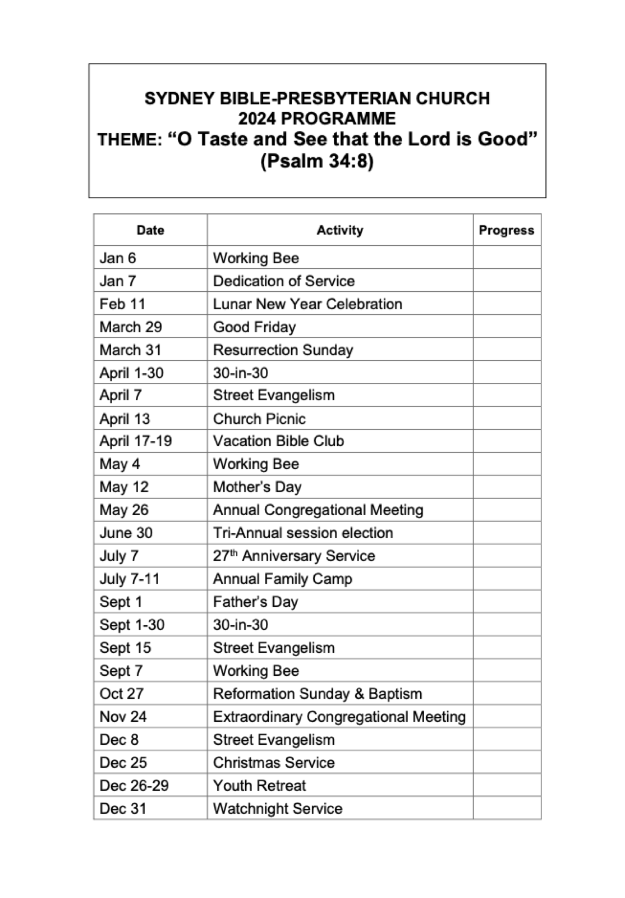

Yearly Events
2024 Proposed activities
Please note that dates are subject to change. For up to date information on each of these activities, please visit or contact us.

| Date | Activity |
|---|---|
| Jan 6 | Working Bee |
| Jan 7 | Dedication of Service |
| Feb 11 | Lunar New Year Celebration |
| March 29 | Good Friday |
| March 31 | Resurrection Sunday |
| April 1-30 | 30-in-30 |
| April 7 | Street Evangelism |
| April 13 | Church Picnic |
| April 17-19 | Vacation Bible Club |
| May 4 | Working Bee |
| May 12 | Mother's Day |
| May 26 | Annual Congregational Meeting |
| June 30 | Tri-Annual session election |
| July 7 | 27th Anniversary Service |
| July 7-11 | Annual Family Camp |
| Sept 1 | Father's Day |
| Sept 1-30 | 30-in-30 |
| Sept 15 | Street Evangelism |
| Sept 7 | Working Bee |
| Oct 27 | Reformation Sunday & Baptism |
| Nov 24 | Extraordinary Congregational Meeting |
| Dec 8 | Street Evangelism |
| Dec 25 | Christmas Service |
| Dec 26-29 | Youth Retreat |
| Dec 31 | Watchnight Service |